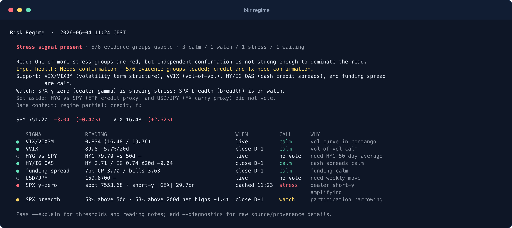
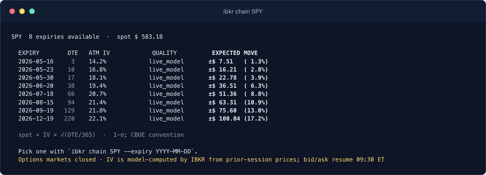
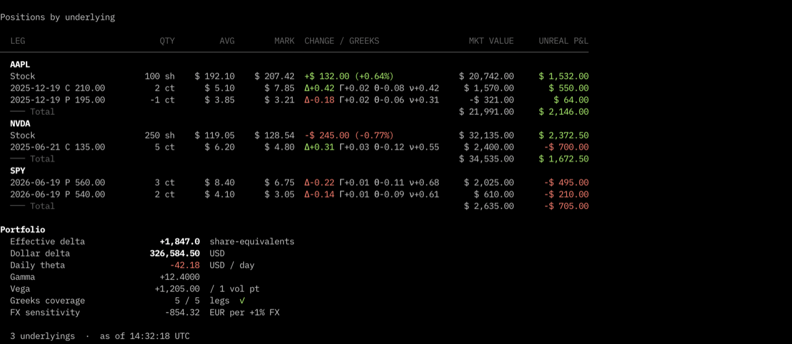

Risk regime
One dashboard for volatility, credit, funding, FX carry, dealer gamma, and S&P 500 breadth.
Interactive Brokers MCP server
Connect Interactive Brokers (IBKR) Gateway or TWS to Claude Desktop, Claude Code, Cursor, Zed, and other MCP hosts. Read live portfolio, calendars, options, quotes, scanners, breadth, gamma, and risk-regime data from one local tool.
The bundled CLI and MCP server expose account and market data, but no order-entry interface.

Fresh terminal screenshots from the live CLI, with position quantities and monetary account details sanitized before publication.
One dashboard for volatility, credit, funding, FX carry, dealer gamma, and S&P 500 breadth.

Expiry lists, ATM implied volatility, and expected moves from the local IBKR market-data session.

Underlying grouping, option legs, marks, Greek coverage, and portfolio-level exposure with sensitive values redacted here.
The MCP descriptions are written for agent routing, so assistants can pick the right tool without you naming commands.
ibkr mcp exposes read-only account, quote, calendar, chain, scanner, sizing, breadth, gamma, and regime tools to MCP clients.
Run commands such as ibkr status, ibkr positions, ibkr calendar, ibkr chain SPY, and ibkr regime. Every data command supports JSON.
github.com/osauer/ibkr/pkg/ibkr speaks the TWS protocol directly with no Python bridge and no IBKR jars.
The installer downloads the release for your OS and architecture, verifies the checksum, installs ibkr, and can write the Claude Desktop MCP entry for you.
Prerequisites: IB Gateway 10.37+ or TWS running locally, plus an IBKR Pro account with TWS API access. IBKR Lite does not include TWS API access.
curl -fsSL https://raw.githubusercontent.com/osauer/ibkr/main/install.sh | sh
ibkr setup claude-desktop
# then ask:
# "How does my IBKR account look today?"